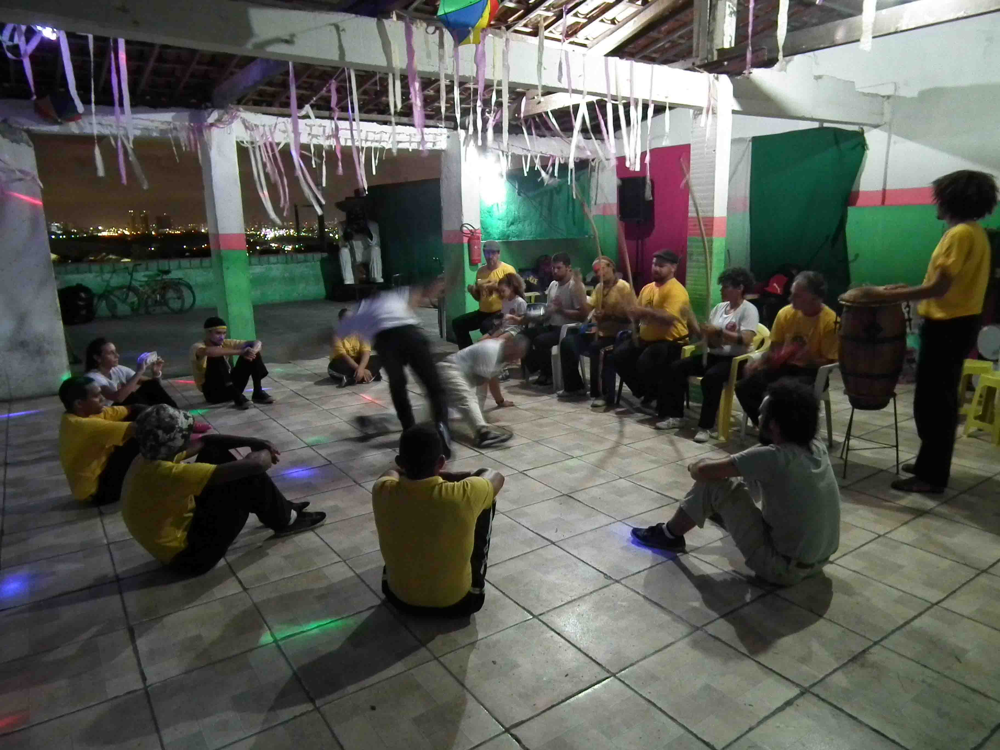

Era uma quarta-feira à noite e a sede do G.R.E.S. Preto Velho, no Alto da Sé, em Olinda, recebia o terceiro dia da Semana Municipal de Capoeira. Eram cerca de 15 pessoas que foram até lá com o intuito de aprender e compartilhar mais sobre a capoeira. Dessas, apenas duas eram mulheres. Priscila era iniciante, fazia poucos meses que tinha começado a jogar, incentivada pelo companheiro, que também estava presente. Já Mônica possuía em seus cabelos grisalhos as marcas dos seus 46 anos de idade, dos quais quase trinta dedicados à capoeira. E foram esses anos que lhe renderam o título de contra-mestra.
Assim como Priscila, foi um homem quem fez Mônica começar na capoeira. Por volta dos anos 1980, seu irmão, o mestre Marcelo Baia, foi atrás do jogo com o mestre Branco de Aruanda e Mônica foi também. Mas, na época, capoeira era coisa de homem e sua mãe não via com bons olhos: acabou a proibindo de jogar. “Se ela não tivesse me proibido eu acho que não seria capoeirista”, conta.
No entanto, não foi de imediato que Mônica engatilhou na arte. Fez apenas uma aula e não gostou. “Eu acho que não era o momento. Como eu sou do candomblé, eu acredito que cada coisa tem o seu momento de chegar. E aquele não era meu”, opina. Cinco anos depois, em 1985, ela vai à procura de outro mentor, retomando as atividades com o Mestre Sapo até 1993, quando engravida do filho mais velho, Gabriel, e para novamente.
Depois de um hiato de cinco anos, ela volta a jogar capoeira no grupo São Bento Pequeno, até se desiludir com as pessoas que jogavam capoeira e dar uma nova pausa. Retoma apenas no final de 2010, com o Movimento Rosa Choque, responsável pela sua volta definitiva à capoeira.
Em 2015, Mônica entra no curso de pedagogia na UFPE e se depara com meninas que estavam querendo formar um grupo de capoeira só de mulheres para fugir do machismo. No começo havia várias alunas, todas acadêmicas do mestrado, doutorado e das graduações. Com o tempo, a frequência de participantes começou a diminuir e o grupo acabou.
Mais tarde, Mônica, junto com a professora de dança Gabi Santana, criadora do Capoeira no CAC, fizeram um projeto de extensão voltado para dar aulas de capoeira no centro. E a história se repetiu. Quem se matriculava ia só pela curiosidade, não queria compromisso. Isso foi criando um desapontamento em Mônica. “Esse povo pensa que capoeira é fast food. Não, capoeira é uma vida. Você vê eu, meu irmão, meus contemporâneos que passamos a vida toda nos dedicando a isso”, critica. E assim, o curso de extensão também acabou sendo fechado.
O Movimento Rosa Choque, que fez com que Mônica voltasse de vez à capoeira depois de uma de suas pausas, foi um iniciativa da Mestra Abel, do grupo São Salomão, na Várzea. Tinha como objetivo criar um espaço onde apenas mulheres se reuniriam, sempre aos sábados, para jogar capoeira. O grupo era destinado a fazer com que as mulheres não deixassem a capoeira por não terem condições de estarem na rotina “normal” de treinos de outros grupos por estarem grávidas, cuidando de filho, trabalhando ou qualquer outro motivo. “Isso já identifica o machismo na capoeira né? Quando a mulher engravida e dá a luz, quem para de treinar automaticamente é ela. O homem não chega para dizer ‘vai lá treinar que eu fico com o pirraia hoje’. Essa movimentação está naturalizada já na nossa sociedade”, aponta.
O movimento persiste até os dias de hoje. Todos os anos, no mês de março, a Mestra Abel convida mulheres para dar aula. Mônica foi convidada duas vezes para ministrar oficinas e também já foi homenageada pelo grupo. Este ano, o movimento trouxe a Mestra Janja, na qual Mônica se inspira, deixando claro em seu jeito de falar a admiração pela capoeirista. Também em 2017, o grupo fez uma nova mudança no evento que realiza anualmente: abriu para a participação masculina. Apesar de Mônica já ter dado aulas para um grupo exclusivo de mulheres, hoje ela defende que haja a integração entre ambos os gêneros na capoeira.
“É massa ter um espaço só de mulheres, da gente conversar, se entender. Mas eu acho importante eles estarem presente. Eu acho importante a luta contra o machismo quando se está num ambiente misto. No meu ver, não adianta você estar em um ambiente só de mulheres falando, falando sem que essa consciência chegue pra eles. Até porque eles muitas vezes são machistas e nem têm noção disso”, explica Mônica.
“Quando há um ambiente misto é mais fácil da gente sair incutindo essa conscientização, além de mostrar a eles coisas que são machistas e muitas vezes nem eles mesmos percebem. Do jeito de lhe tratar até as músicas que se tocam na roda de capoeira quando tem uma mulher presente”, continua. E assim entoa uma canção para exemplificar:
Mônica se deparou com o machismo desde que começou na capoeira. Como ela mesma diz, sua luta é solitária desde sempre, desde que a mãe a barrou por “ser coisa de homem”. “Aqui [em Olinda] só tinha eu. Eu saí abrindo caminho e de repente vieram outras na trilha que eu criei. Eu fui me impondo. Sempre teve a coisa dos homens não deixarem as mulheres tocarem os instrumentos, cantarem. Nunca tive facilidade de chegarem pra mim dizendo ‘toma aqui o berimbau, Mônica’. Eu que tive que fazer por onde”, relembra.
Foi fazendo por onde que hoje Mônica é a única mulher a integrar a União Olindense de Capoeira, a Unoca. “As mulheres não estão chegando. Alguns falam que é um espaço machista porque só tem homem, mas eu não estou lá? Eu gosto de lutar assim, em espaços hostis”, enfatiza. A associação tem como objetivo promover ações para enaltecer a capoeira e angariar recursos para apoiar projetos de mestres capoeiristas. A Unoca possui dois conselhos, um para a capoeira regional e outro para capoeira angola, do qual Mônica faz parte.
Além de conviver com o machismo, Mônica também teve de enfrentar a dificuldade de ser negra em uma sociedade que silencia o racismo. Foi casada durante 18 anos com o pai de seus filhos, que era de uma outra realidade socioeconômica. Seus dois meninos sempre estudaram em escolas particulares e foi uma dessas que serviu de cenário para uma das lembranças de Mônica. Quando ela foi buscar Daniel, que na época estudava na turma do jardim II, conta que estava vestida do mesmo jeito que estava no dia da entrevista: “despojada”. Afinal, como ela mesma diz, nunca se encantou pela riqueza de ninguém. Foi então que a professora, que não a conhecia, perguntou se ela era a portadora do pequeno. “Sim, sou a portadora”, respondeu. “Para você ver, eu era a portadora. Eu não poderia ser mãe de Daniel. Quando meu filho me viu veio gritando em minha direção ‘mainha!’ e a professora ficou toda sem jeito me pedindo mil desculpas”, relembra.
Dentro de casa também não conseguiu escapar da violência. No casamento, em um episódio, foi vítima de agressão do marido. “Ai as pessoas dizem ‘poxa tu da capoeira e não reagiu?’. Não, não reagi. Quem tirou ele de cima de mim foi meu filho mais velho, que na época era pré-adolescente”, relembra.
Da vida para a roda de capoeira, também se deparou com episódios discriminatórios. Enquanto era casada, Mônica incentivava o marido a jogar capoeira, sendo inclusive sua mestra. Mas a arte não era para ele. “Nunca jogou bem, nunca cantou, nunca tocou e não tinha ritmo para nada na vida. E foi em determinado grupo que o mestre chegou para oferecer os instrumentos para ele. Quando eu fui pegar, ele insistiu para meu marido tocar. Pensei logo que tinha alguma coisa ali para tirarem alguém que sabe tocar e deixar um que não toca nada”, relembra. Esse episódio foi um dos motivos que fizeram Mônica se desiludir e dar uma de suas pausas na capoeira, até perceber que o problema estava nas pessoas e não na capoeira e que a arte iria continuar independente dela.
Na universidade, os olhares de cima a baixo dos alunos do Centro de Educação - que ela diz ser de maioria evangélica - fazem com que ela odeie o curso de pedagogia. “Eu não sei porque é que eu estou ali. Eu sou tudo o que aquele povo repugna”. E é no Centro de Artes e Comunicações (CAC) que ela se sente bem. “Lá ninguém me olha atravessado. Eu me sinto bem demais ali. Lá é minha casa”, afirma com a entonação da voz de quem se sente feliz e pertencente a um espaço independente de qualquer coisa.
Já em Olinda, a realidade é diferente. Na cidade em que se criou, Mônica conseguiu se impor mais facilmente nas rodas de capoeira e impor sua identidade: mulher, negra, do candomblé, capoeirista, tatuada e lésbica. Para ela, sua vida tem que estar resolvida com seus filhos e com o resto não se importa: escancara quem é e tira onda.
Mônica só conseguiu expor e vivenciar sua condição sexual a partir de 2010, segundo ela, graças ao curso de ciências sociais. Mas se assumir lésbica trouxe os impasses na família. A mãe nunca aceitou a orientação sexual da filha e por isso entraram em conflito. “Ela me aperreou a vida toda e ainda mais agora me vem com isso”, relembra as palavras da mãe. “Agora, mãe? Se você tivesse olhado mais para mim você iria perceber que não era de agora, era desde criança. E ela calou a boca e nunca mais tocou no assunto”, continua contando a lembrança. Depois disso, Mônica não conseguiu sentar para conversar com sua mãe sobre o assunto enquanto ela era viva.
Depois de trinta anos de indas e vindas, mas sem nunca abandonar a capoeira, Mônica ganhou no último mês de agosto (estamos em outubro), das mãos do irmão, o título de contra-mestra. A honraria veio após a insistência dos amigos próximos que não entendiam como, depois de tanto tempo, Mônica ainda não era detentora do título. “Todo mundo dizia que já estava na hora de ter um título. Uns falavam até que eu deveria ser mestra. Eu não ligo muito para isso, o que importa pra mim é o que você faz com aquele brinquedo popular. O quanto você representa ali dentro, o quanto você preserva aquilo, o quanto você luta”, afirma Mônica.
Para ela, o título vem como o reconhecimento de uma vida dedicada à capoeira. O reconhecimento pelo que fez e o que ainda faz pelo jogo. Mesmo sabendo representar a capoeira, para Mônica, ainda não está na sua hora de assumir a posição de mestra. Ainda falta ter seus discípulos, mas não apenas isso. “Falta mais tempo e mais bagagem. Eu sou meio exigente comigo mesma em certas coisas e a capoeira é uma delas. Eu não queria nem esse título agora”, reconhece humildemente.
Apesar de achar que não era a hora de receber o título de contra-mestre, Mônica não titubeia na hora de dizer que a ‘demora’ foi por causa do machismo. “Foi o machismo. Eu me desvinculei de grupos de capoeira e procurei ter minha autonomia. Eu sempre dei aula independente de estar ou não em algum grupo. Ao sair de grupos eu saio da égide dos homens e, na minha cabeça, eu só ganharia o título se eu estivesse em um grupo sob a liderança masculina”, conta. E ela deixou claro para o irmão que não era por causa do título que ela seria do grupo de capoeira dele. Ainda assim Baia concedeu a honraria à irmã.
Hoje, a parceria com o irmão se transformou no grupo Ngolo Nguzu, que se reúne todas as segundas e quartas na sede do Preto Velho. No grupo, eles procuram juntos estudar e aperfeiçoar os movimentos da capoeira angola. Mesmo participando do grupo e tomando as decisões em conjunto com o irmão, Mônica deixa claro que de sua autonomia ela jamais abrirá mão.
A música veio ainda antes da capoeira na vida de Mônica. Saxofonista, já passou pela Orquestra 100% Mulher, de Carmem Pontes. Há seis anos, toca na Orquestra Só Mulheres, de Lourdinha Nóbrega, que, como o nome já diz, só tem mulheres em sua composição. Seu primeiro carnaval com o grupo foi em 2011.
Como ela mesma diz, com o frevo “fica louca”, seja na dança quanto na música. Apesar da condromalácia patelar, doença que afeta o joelho, trazendo dores ao realizar certos movimentos, a paixão pelo frevo segue inabalada, já tendo até dado aula no CAC. “O frevo tá tocando e eu tô lá doidinha, doidinha”, brinca.
Sempre foi apaixonada pelo Bloco da Pitombeira. Quando criança, por volta dos 5 anos de idade, o pai a levou para ver o bloco se montando no Largo do Guadalupe. “Eu via os caras tocando e eu disse logo ‘painho, quando eu crescer eu vou tocar aquilo ali’, apontando para o sax”, relembra. “Mas eu menti pra ele, porque eu nem cresci, nem aprendi a tocar ainda porque isso é uma desgraça de difícil”, brinca.
Aos 11 anos, Mônica entrou no projeto olindense Fundação Casa das Crianças, que ficava onde hoje é a favela do Bacário. Mônica conta que era lá que os filhos de pobre podiam ter acesso a cultura por meio de cavalo marinho, com Mestre Salustiano, do mamulengo, dos violeiros. O local oferecia cursos de marcenaria, xilogravura, serigrafia, tapeçaria, panificação, viola, bumba-meu-boi e música, que foi no qual Mônica pediu para a mãe matriculá-la.
Lá, devido ao preconceito do maestro em não dar instrumentos maiores e mais pesados para as meninas, começou a tocar clarinete. Em 1983, depois que a Fundarpe investiu no projeto e novos instrumentos foram comprados, Mônica passou a tocar saxofone e até hoje não parou, atendendo ao pedido da mãe. “Foi uma das coisas que mãe pediu antes de morrer, que eu nunca parasse de tocar. Ela disse que a melhor coisa da minha vida foi o sax”.